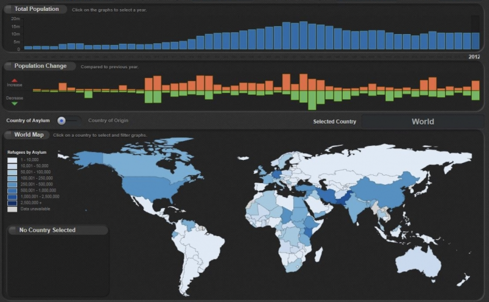
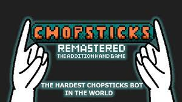

My name is Catherine Bregou and I am a rising junior computer science major at Carleton College. Below you can see some projects that I have worked on and if you want to learn more about me you can contact me at bregouc@carleton.edu or view my resume here.
Dynamic UI/UX Website Developments with React
I have successfully designed and developed multiple cutting-edge, fully responsive UI/UX websites using React JS. The most recent is inspired by ChatGPT's capabilities. This project demonstrates my expertise in creating a dynamic user interface that seamlessly adapts to diverse devices and screen sizes. By integrating React's powerful functionalities, I've crafted an intuitive and interactive website that embodies modern design principles.
Global Immigration Data Visualization Platform

I led the creation of a data visualization site using Department of Homeland Security data, simplifying global immigration insights. I developed a user-friendly platform with customizable SQL queries, generating intuitive graphs and maps. y emphasis on accessibility ensured WAVE test compliance, achieved through contrast optimization and seamless audio integration, resulting in an inclusive user experience.
Artificial Life and Digital Evolution
I used Digital Evolution to explore the intricate relationship between host organisms and parasites. Each organism bore a unique genome, evolving over time to enhance efficiency in achieving its objectives. The outcome of my experiment revealed that the presence of parasites unexpectedly benefits reproducer organisms through heightened competition. I expanded this study by modifying variables, allowing me to investigate ecosystem responses across diverse circumstances and extended timeframes.
Chopsticks Game Development Featuring Computer-Driven Gameplay

I have developed game platforms, including an online game Chopsticks. I designed an intuitive and enjoyable front end interface, allowing players to make moves while the computer strategizes its response. By meticulously calibrating the game's logic, I ensured the computer made thoughtful decisions without being unbeatable, providing a challenging yet rewarding experience for players.